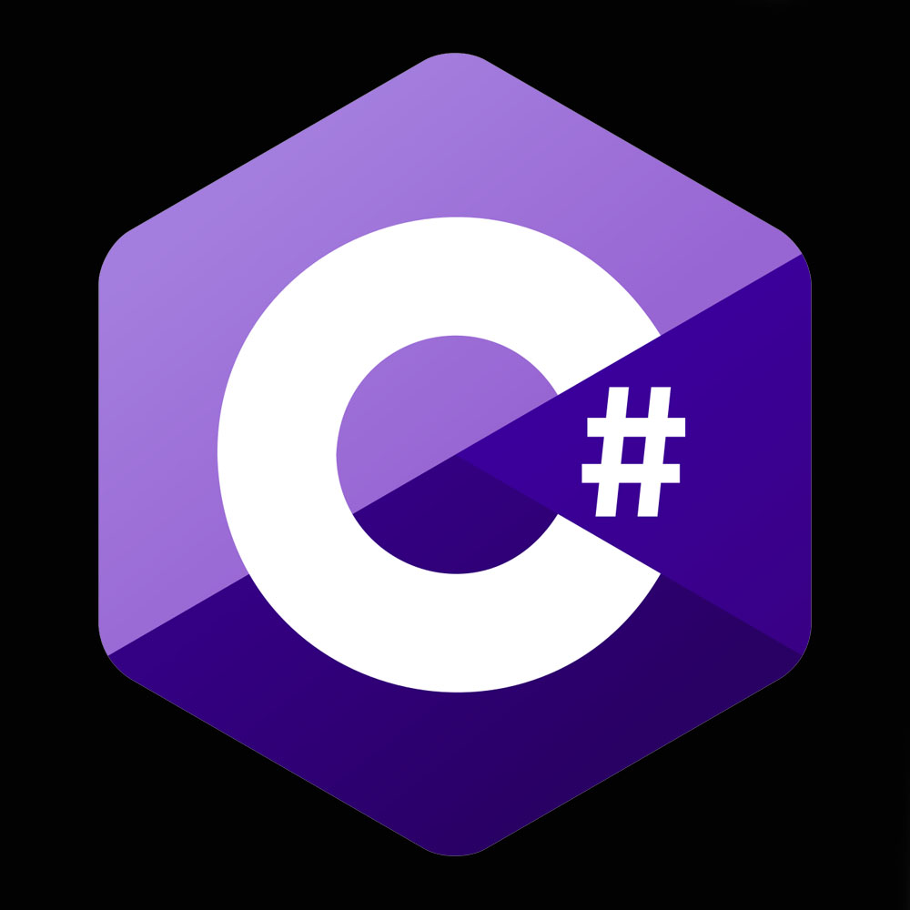
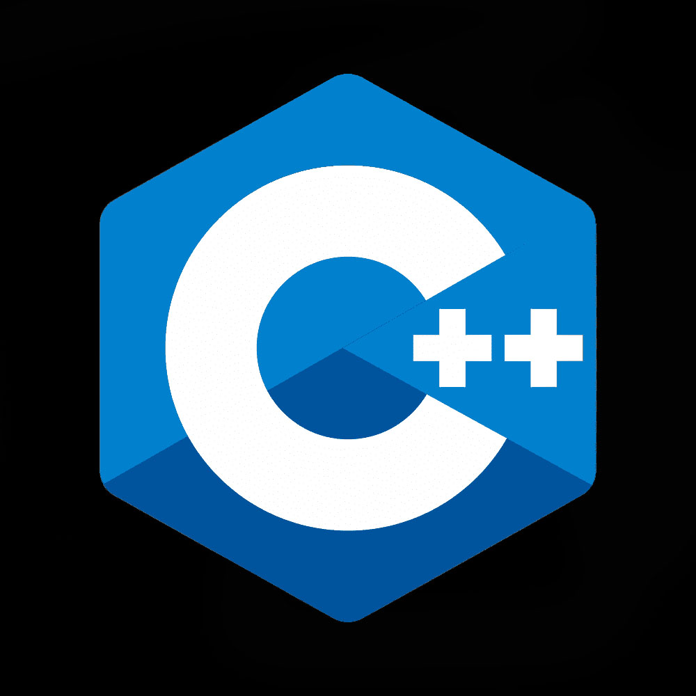
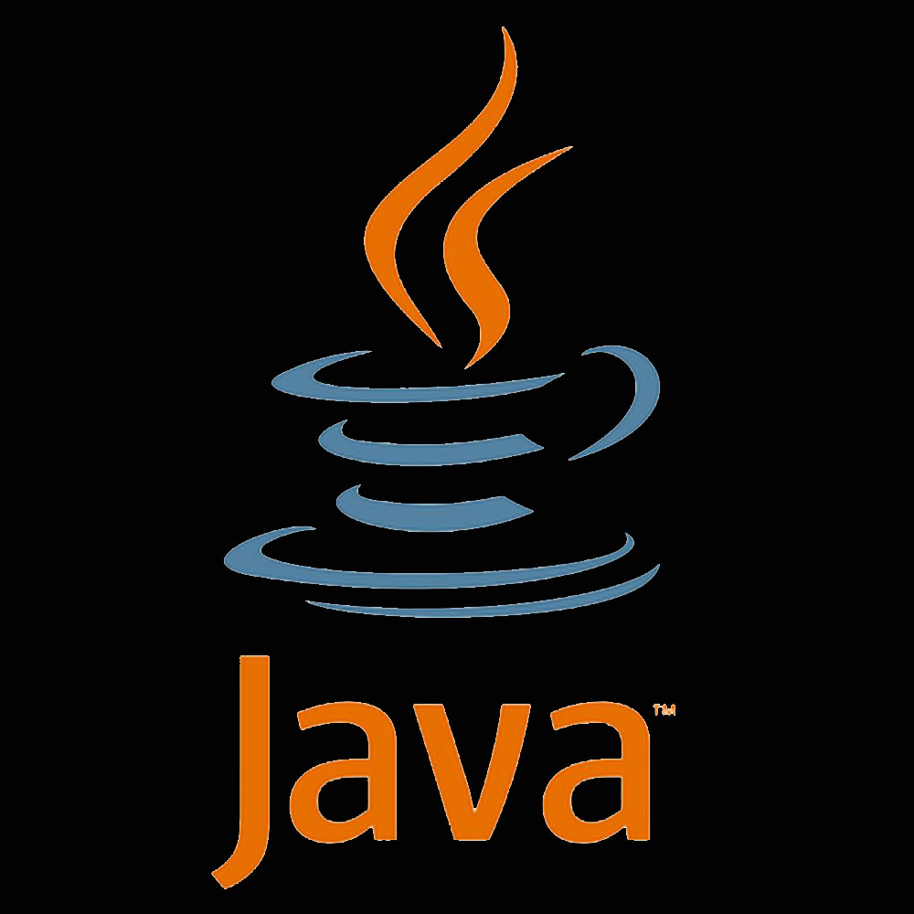
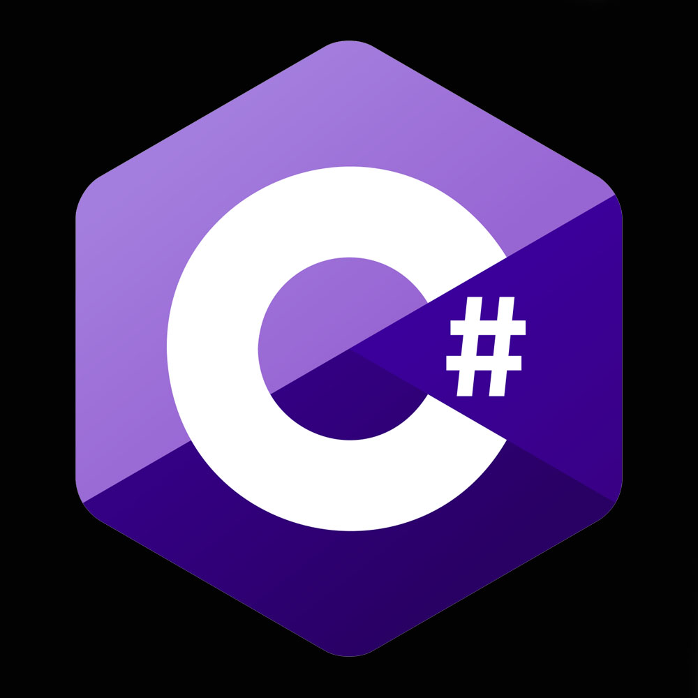
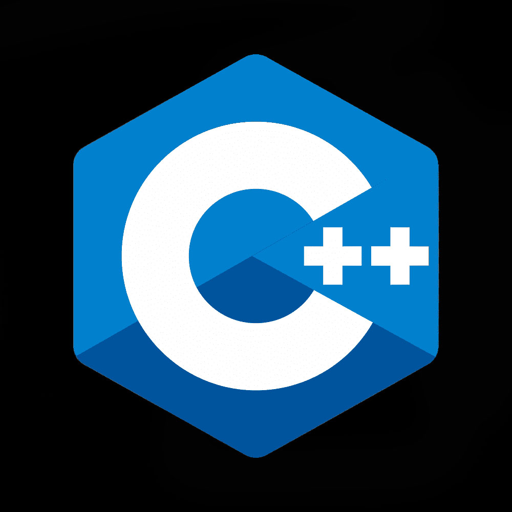
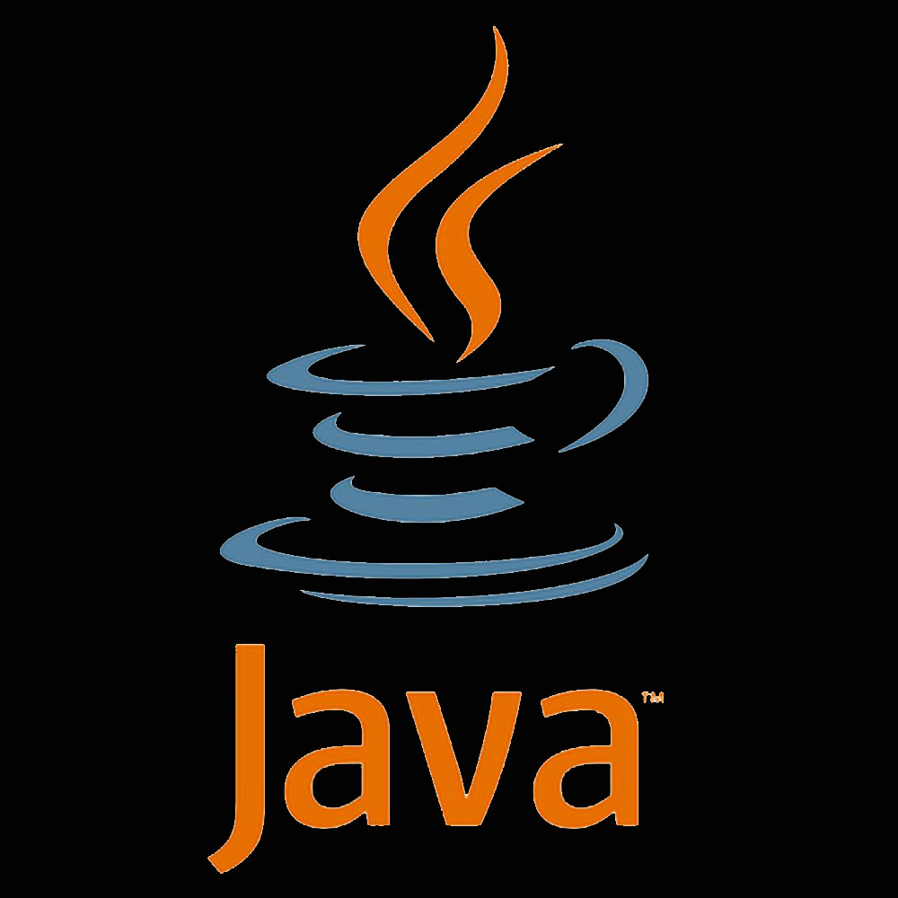

JavaScript, C#, C++, Java and Python
All Are Top Programming
Languages
Asking “which is the best programming language” is like asking about
the most important cooking tool in your kitchen. Mixer? Spatula?
Microwave? Cooktop? Measuring cup? Egg timer? Lemon zester? All are
critical, depending on what you’re making, and how you like to cook.
The same is true with programming languages. Some are best at coding
=applications that run natively on mobile devices — think Objective-C
or Java. Others are good at encoding logic within a PDF file, or on a
web page — think JavaScript. And still others are best at coding fast
applications for virtual machines or running directly on the operating
system — for many people, that’s C or C++. Want a general purpose
language? Think Python, PHP. Specialized? R and Matlab are good for
statistics and data analytics. And so-on.

 




